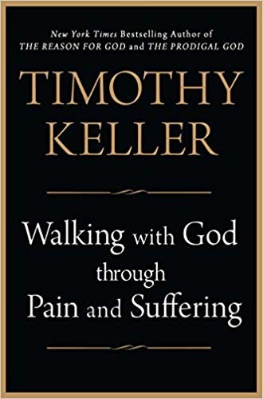

Keller's fullest book, and he wrote it after his own thyroid cancer (2002) and the years when Kathy's Crohn's disease meant seven operations in one year. He found that most books on suffering take only one angle: philosophy, theology or devotion. This one takes all three, in that order: first the furnace from the outside, then what the Bible says about it, then how to walk through it with God. Most chapters end with a real person's story.
The image that holds the book together
The Bible calls trials "the fire" (1 Peter 4:12) and promises "when you walk through fire you shall not be burned" (Isaiah 43:2). But Peter adds a twist: faith is "tested by fire" like gold (1 Peter 1:6–7). A smelter's fire is extremely hot and dangerous, yet used rightly it doesn't destroy what you put in. It refines it. Gold softens and melts but doesn't burn; the dross rises to the surface and can be skimmed off.
Suffering doesn't refine us automatically. It brings up what was already there.
In Daniel 3 three men are thrown into an actual furnace, and the king sees a fourth walking with them, "like a son of the gods." For Keller, that fourth man went on to enter an infinitely hotter furnace on the cross. In Jesus, God is not only beside us in the fire; he has felt the flames himself.
Keller and Kathy had Psalm 34 engraved inside their wedding rings, and only later noticed its middle line: "let the afflicted hear and be glad." Back then, Kathy says, neither of them had known the affliction of an ingrown toenail.
I always knew, in principle, that "Jesus is all you need" to get through. But you don't really know Jesus is all you need until Jesus is all you have.A man facing the loss of his career and family, to Keller
Suffering seen from outside: cultures, history, philosophy.
Chapters 1–2 · Cultures of suffering
Keller's father, dying, asked: what's the point? Every culture has to answer that question for its people. Drawing on the anthropologist Richard Shweder, Keller compares the options:
| Culture | What suffering is | What to do |
|---|---|---|
| Moralistic | Payment for wrongdoing (karma) | Live rightly; pay it off |
| Self-transcending | The result of desire (Buddhism) | Detach; want nothing too much |
| Fatalistic | Fate, the stars | Endure with honour |
| Dualistic | The battle between good and evil | Fight on the right side |
| Secular | An accident with no meaning | Avoid it, manage it, hand it to experts, remove its cause |
| Christian | Real (not illusion), often unfair (not karma), overwhelming (not stoic), yet meaningful | Walk through it with God, by grace |
All the older cultures saw suffering as a teacher: something that could move you toward life's real goal, because that goal (virtue, enlightenment, honour, heaven) lay beyond comfort. Secularism alone says this material life is all there is, so suffering can only interrupt it. Hence we are more shocked and helpless in the face of suffering than our ancestors, or than most people in poorer countries today. We become "victims" and outsource suffering to experts; the diagnostic manuals treat symptoms without asking about the life that produced them.
Cicero said philosophy's task is to prepare us for death. The Stoics' answer was reason over feeling and holding everything loosely (Epictetus: when you kiss your child, tell yourself you are kissing a mortal). Following Luc Ferry, Keller argues Christianity overtook them by offering three things: a greater hope (bodily resurrection, not dissolving into the cosmos), more room for grief (Jesus wept), and a personal Father's care. Luther added the "theology of the cross": God works through weakness and pain, so the cross, not glory, is how we read him. Job's friends were theologians of glory.
Then came Charles Taylor's "immanent frame." After the Lisbon earthquake of 1755, Europeans began to assume two things: that we have enough evidence to put God on trial, and that God exists for our benefit. That, not suffering itself, is what made "the problem of evil" a faith-destroyer.
Four teachings once equipped Christians: a sovereign, wise God; a God who suffered in Christ; assurance of salvation by grace; and bodily resurrection.
Without them, Keller says bluntly, outright unbelief may prepare you better for suffering than a vague belief in a God who owes you a good life.
Chapter 3 · The problem of secularism
After the Newtown school shooting in 2012, a New York Times columnist noticed that the vigils and comfort came almost entirely from religious communities. The atheist writer Susan Jacoby replied that atheism helped her: it frees you to fight suffering's causes, and "the dead do not suffer." Keller grants the first point. But a godless universe can't say why injustice is unjust, and at a child's coffin "the dead don't suffer" is cold comfort.
Chapter 4 · The problem of evil
Until the 1970s many philosophers thought evil logically disproved God. Then Alvin Plantinga showed it doesn't, and most philosophers now agree. Christian thinkers have also largely given up on a full "theodicy" (a complete explanation of why God allows evil). Each one explains part: suffering as soul-making (Irenaeus), free will (Augustine), fixed natural laws (C. S. Lewis). None explains all.
The strongest objection is the gut one: Elie Wiesel's Night. Keller treats it with respect. But it boomerangs. To be outraged at evil you need a standard of good that nature doesn't supply. C. S. Lewis dropped atheism when he saw you can't call a line crooked without some idea of a straight one. Martin Luther King and Nietzsche agree on one point: without God there is no higher moral law. So evil may be evidence for God.
What the Bible says: realistic and hopeful at once.
Chapters 5–7 · Answers for the heart
Drop either half and you get a distorted picture: a cruel God, a helpless God, or a guilty sufferer. Hold both and you can grieve honestly and trust.
The sociologist Peter Berger notes that Job's answer ("God knows what he is doing; be silent") is softened in the New Testament: God himself suffers. No other religion even imagines it. A God strong enough to become weak.
We don't know why God allows each instance of evil. But we know what the reason isn't. It can't be that he doesn't love us.
And why didn't Jesus come with a sword to end all suffering? Because much of the darkness is in us. Had he come to bring justice the first time, none of us would survive it. He came first to bear it. At the end, in Revelation 5, the scroll of history is opened by a slaughtered Lamb. Henri Blocher's image is judo: evil's own force, at the cross, was turned against itself.
Chapters 8–9 · The point of suffering
The psychologist Jonathan Haidt finds real "post-traumatic growth": suffering reveals hidden strength, deepens relationships and reorders priorities. But the Bible's first purpose for suffering is God's glory (kabod, literally "weight"). Trusting him when it costs you is how you treat him as weighty.
Hebrews 12's picture is a gym: you strip off your street clothes and every weakness shows; a good trainer targets exactly those muscles; it hurts, then it bears fruit. "Do not despise the Lord's discipline, nor lose heart."
The theologian John Feinberg had all the intellectual answers, until his wife was diagnosed with Huntington's disease, with a fifty per cent risk for their children. None of the answers touched his heart. The truths weren't wrong. They had to travel from head to heart, and that takes preparation: know the Bible and pray before the crisis. "Do not be surprised at the fiery trial" (1 Peter 4:12).
Chapter 10 · The faces of suffering
As a young pastor Keller lent a divorcing woman a book of sermons that fitted a quite different kind of grief. After his own cancer he told a woman with breast cancer that he'd "had cancer too," and saw her face fall. Different suffering needs different help. Choose a kind:
Simone Weil's essay on affliction names what it does to people, in different strengths for each person:
Feinberg kept two lists of what people said to him. The useless list was full of true things said badly or too early ("God doesn't make mistakes"). What helped: friends who simply came, and his father reminding him that grace isn't stockpiled; it comes day by day. The truths are right, but the order matters.
Not steps in order, but facets of one step: staying close to the God who says "I am with you."
Most modern advice talks about managing stress. The Bible's word is walking: not running away, not lying down, but moving forward through. Isaiah 43:2 says when you pass through the waters and the fire, not if. The three men in Daniel 3 said: our God is able to save us, "but even if he does not," we won't bow. They trusted God, not their own idea of what he would do. "I just know God will heal me" can look like faith while hiding anxiety underneath. Go into the furnace with the gospel, Keller says, and you can say: this is my refining fire, not my punishment; Jesus already took the fire of judgment for me. Go in without it, and you'll conclude that either God is cruel or you are worthless.
Ronald Rittgers shows that even the Reformers neglected lament. Yet Job raged, cursed his birthday and accused God, and at the end God says Job spoke rightly of him, not the friends with their correct theology. "A bruised reed he will not break" (Isaiah 42:3). When Elijah collapsed under the broom tree wanting to die, God sent an angel who said: get up and eat. Sleep and food first; the talk came later.
Joseph Bayly, who buried three of his sons, remembered one visitor who talked on about God's purposes and the hope beyond the grave, all of it true, and he only wanted him to leave. Another just sat with him for an hour and said nothing. The second one helped. When Keller's gay brother Billy was dying of AIDS, their conservative parents, in their seventies, travelled nearly a thousand miles and nursed him fourteen hours a day without mentioning the past. In that safety Billy raised it himself.
Psalm 88 ends with no light at all: "darkness is my closest friend." Yet it's in the Bible. A believer can stay in the dark for a long time. And that may be the moment to learn to love God for himself, not for what he gives. Jesus' cry "My God, why have you forsaken me?" means our darkness is never total. Peter writes that you rejoice and are grieved at the same time (1 Peter 1:6). Grief and joy aren't successive; they coexist.
Joseph's story is about a God who seems absent. He's sold by his brothers, falsely accused, forgotten in prison for two years. Only much later, when Judah offers himself as a slave in Benjamin's place, does Joseph weep and say: I am Joseph. Look back and the "coincidences" are countless. Getting what he prayed for (rescue from the pit) would have ruined everything.
Keller tells his congregation that Redeemer exists because a British professor who persuaded him of Presbyterian theology got his US visa in time, thanks to a fellow seminarian whose father was president, because Nixon resigned, because a night watchman noticed an unlocked door. If you're glad Redeemer exists, he says, then even Watergate happened for you.
British shepherds plunge their sheep into tanks of disinfectant; the sheep are terrified and think they're drowning. The shepherd knows why.
Everything is needful that he sends; nothing can be needful that he withholds.John Newton, letter
Joseph's last words to his brothers hold both sides: "You meant evil against me, but God meant it for good" (Genesis 50:20). Jesus was the greater Joseph, rejected by his own and sold for thirty pieces of silver, and through his suffering God saved many.
Satan's charge is that Job loves God only for his gifts. There's a grain of truth in it, so God allows the test. Job's friends sound like conventional evangelical piety: you must have sinned. They're "miserable comforters." Job demands an explanation. God appears in a storm, but under his personal name, and he answers Job without crushing him. He gives no reason at all. If Job got the explanation, he would love God for the clarity; only trust without explanation proves Satan wrong. God's speeches about creation and wild animals say one thing: you are not God, and you couldn't run the world.
What did Job do right? Even raging, he kept talking to God. Psalm 42 shows the same: pour out your heart, then talk back to it. "Why are you cast down, O my soul? Hope in God." Martyn Lloyd-Jones: stop listening to yourself and start talking to yourself. The psychiatrist John White said that in his own severe depression what kept him sane was a bone-dry, weeks-long study of Hosea, not devotional reading.
At the end Job says: "I had heard of you, but now my eye sees you." And God, for all his strong words, never mentions Job's sins. We don't need a voice from the storm. We need to know that Jesus went into the ultimate storm for us.
Paul was flogged, stoned and shipwrecked, and wrote from prison that he had learned contentment. The peace of Philippians 4 isn't an absence of trouble but a presence: "the God of peace will be with you." Three practices lead there:
Two Christian actors at Redeemer auditioned for the same big role. For one, acting was his whole life; when he lost it he fell into depression and drugs. The other also wept, then said: maybe I can serve God better in another job. Same loss, different treasure.
Horatio Spafford lost his property in the Chicago fire of 1871. Two years later his four daughters drowned crossing the Atlantic; his wife cabled two words: "Saved alone." On his way to her he wrote "It is well with my soul."
Nothing makes suffering more unbearable than losing hope. Two men were taken prisoner: one had just learned his family was dead, and he died within two years; the other knew they were waiting, and walked out free after ten. Revelation was written to people being killed and imprisoned, and it gave them a new heaven and earth with no more tears. In 1947 Howard Thurman told a Harvard audience that the spirituals' heaven was not escapism: taken literally, it gave enslaved people dignity and the strength to endure.
Keller's own moment of "peace that passes understanding" came on the morning of his cancer surgery. Praying just before the anaesthetic, he suddenly saw the whole universe as a realm of joy and beauty, which no illness could touch.
At present we are on the outside of the world, the wrong side of the door… But all the leaves of the New Testament are rustling with the rumour that it will not always be so.C. S. Lewis, "The Weight of Glory"
Epilogue
Keller ends with George Herbert: we learn to bring God our joys with weeping, and then our griefs with praise.